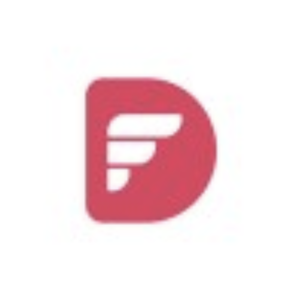

Khanh Dao
< Front End Engineer />ABOUT
SKILLS
JOB EXPERIENCES
Front-end Developer at Morphotech
Dec 2020 - Aug 2021 · mos
Methodology: Agile
-
Skill Set
- Javascript (Latest syntax ES6)
- React JS
- Redux, redux saga
- Styling: SCSS, Ant design v3 and v4, Bootstrap.
-
Responsibilities
- Clarify US with BA and Client
- Implement new features as US defined
- Attend Agile process ( Daily Standup, Sprint planning, Estimation, Sprint grooming..)
- Clean up backlog issue

Front-end Developer at Dwarves Foundation
Sep 2020 - Nov 2020 · 3 mos
Methodology:Kanban
-
Skill Set
- Being more confident when implementing Web App with Typescript
- Handing Tree State and API fetched more effectively with Redux Toolkits
- Styling the entire Web App including responsive with Tailwinds and Styled Components
-
Responsibilities
- Implementing the Front-End side on Figma by using TypeScript
- Communicating with client and design team to clarify requirements
- Refactoring code by applying the newest technology of React (React Hooks and related libraries React Redux, Redux Toolkits)
- Restructuring project styling module with Tailwinds and Styled Component
- Applying Responsive for the app with various screen size ( Desktop, Tablet and Phone devices )
QA Automation Engineer and Front-End Developer at Epam Systems
May 2019 - Aug 2020 · 1 yr 4 mos
Methodology:Agile
-
QA Duties
May - Sep 2019 · 6 mos
- Implement API automation framework with Katalon
- Scripting Postman test suite for API testing.
- Clarify requirement and prepare test case.
-
Front End Duty
Oct 2019 - Aug 2020 · 10 mos
- Having concrete Javascript foundation with latest syntax ES6. ( Being fluent in both Class Base and Function Base Component).
- Having good understanding of Restful API and handling server side request.
- Proficient understanding of code versioning tools GIT
- Intermediate experience with styling UI UX by most of supported libraries ( Styled component, Bootstrap, Flex Layout..)
- Having hands on newest React technology (React Hook, React Context) to implement Custom Hook.
- Solid understanding of state management crossing the app with Redux and Redux Sagas (included Redux Thunk)
- Having knowledge about optimize the performance of State Tree with Immers and Reselect libraries.
- Proficiency in Front End project structure organization.
- Experience with user interface design.